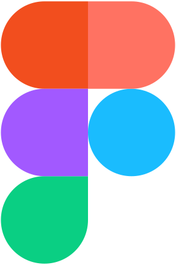
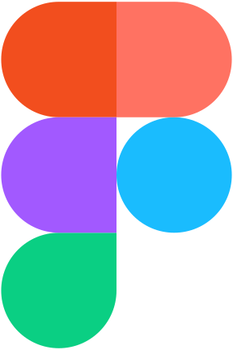

I am doing  Python programming for data analysis and machine learning algorithms (Pytorch).
Python programming for data analysis and machine learning algorithms (Pytorch).
Apart from pure data analysis, I worked on GUI design using PyQt, automation of data acquisition (Python, MATLAB). I create comprehensive visualizations (usually static, but in the recent years–dynamic ones as well). I have an experience with web-development (Flask, PHP, SQL, Javascript; I've been doing my first steps in the field back in 2007, when jQuery was the only option; I also learnt basics of React). I have knowledge of C/C++/C# and currently actively interested in  Rust. I am using cloud platforms: MS Azure and Google Cloud for computing. I am preparing 2D graphics in Adobe Illustrator, 3D graphics in POV-Ray (Blender soon-ish) and have an experience with Figma.
Rust. I am using cloud platforms: MS Azure and Google Cloud for computing. I am preparing 2D graphics in Adobe Illustrator, 3D graphics in POV-Ray (Blender soon-ish) and have an experience with Figma.
I used various research equipment and I have an experience with 3D printing (model preparation, debugging of the slicer).
I have research mind, attention to details and a strong passion to work with data.
Interested in roles as: Data analyst; Python developer; Data scientist.
- Some of my works
- 1. ML-based component analysis Pytorch Neural networks Research
- 2. GUI design & Python interfaces for the drivers of research deviced for a unified data acquisition system Python PyQt
- 3. RESTful API for Django Python Django
- 4. Object recognition & transfer learning for data classification Pytorch Research
- 5. Set of classes to work with Gromacs files Python Research
- 6. Neural networks tutorial (not my authorship, but assembly into convenient format) LaTeX
- 7. Liquid helium management system @ University of Basel PHP/SQL
- 8. Websites management Wordpress
Personal contribution: UI design, pitching of our project.